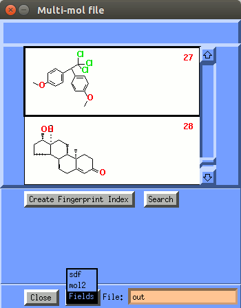
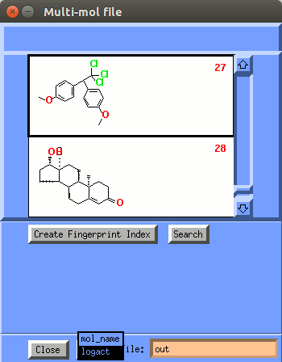
| COmparative Molecular Field Analysis (COMFA) |
|---|
By Gijs Schaftenaar
QSAR (Quantitative Structure Activity Relationships) is linear regression technique based on data from known active molecules. QSAR can be applied when the 3D structure of the receptor is unknown. To apply QSAR, all that is needed are the activities, the 2D and/or 3D structures and properties/descriptors of the molecules. Of course, activities have to be measured, but 3D structures can be determined either by measurement (crystal X-ray analysis) or by calculation from the 2D diagram and (optionally) subsequent optimization.
COMFA is a QSAR approach where the descriptors consist of the Molecular Fields at each point in a 3D grid around the aligned set of 3D ligand molecules.The aim of QSAR/COMFA is to derive a correlation between the biological activity of a set of molecules and their properties/Molecular Fields. Where some properties used with QSAR can be calculated when only the 2D structures of the molecules are available, other properties require a 3D structure. The Molecular Field used as descriptors with COMFA requires a set of 3D ligand structures, complete with hydrogens attached, aligned at their 'biologically active' conformations. Herein lies the problem with the COMFA method: since it is a ligand based method, it is preferably used at the beginning of a drug design project when no crystal structures of the target are available. Hence the 'biologically active' conformations of the ligands can only be guessed at. However what we can safely assume is that these conformations lie not too far above the optimal conformation in energy (at most 5 Kcal/mol) and that the conformations of the active ligands which have similar conformations are more likely to be valid.
How does COMFA work?
What is needed before doing COMFA?
In this tutorial, you will create a COMFA model and study its application.
From the Unix shell (command prompt):
Molden provides an interface to the open-source package Open3DQSAR. Open3DQSAR uses molecular interaction fields (MIF) to calculate descriptors on each point on a 3D grid surrounding a set of pre-aligned molecules, supplied in the form of an .sdf file.
A series of 30 compounds with moderate to high activity for the estrogen receptor (ER-α) (Endocrinology 1997, 138(9), 4022-4025) have been constructed and stored in the file est+act.sdf. This set, along with the measured activity data, will be used for training in a COMFA model.
First, we need to write out the activities stored in the .sdf file into a simple .txt file.
You should now have a multi-mol file with 30 molecules:
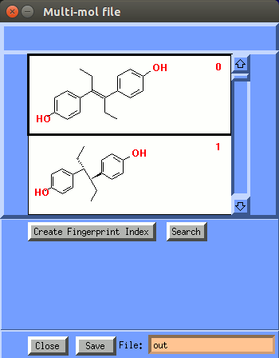
Take a look at the collection of molecules;
You can copy a molecule from the multi-mol file to the molecular viewing area by
single-clicking the 2D representation.
Rotate the molecule by using the mouse (keep left mouse button pressed down).
The majority of the molecules are steroids; do you recognize the
steroid skeleton? Notice that there are also a number of non-steroidal molecules in the training set.
Write down the numbers of the non-steroidal compounds. You will need them later on in the tutorial.
Now the activity data are exported from the multi-mol file to a text file, by clicking the Save button.:
 |  |
The est+act_logact.txt text file has as first line Affinity and for each
structure a line with the logarithm of the activity.
The activities are relative binding affinities, expressed as
(nanomolar!) concentration values. In COMFA/QSAR the logarithms of
concentrations are used,
similar to using pH for the acidity
of a solution. So the values we'll be using are
-log(concentration*10-9).
You should now have a est+act.sdf database with 30 molecules and a
corresponding file est+act_logact.txt with activities.
Now let us start the molden Open3DQSAR interface:
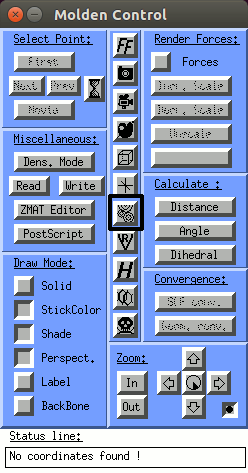 | 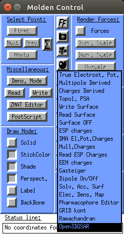 | 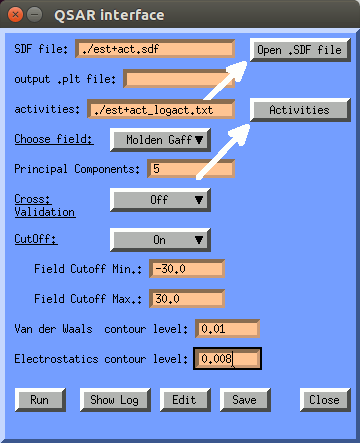 | 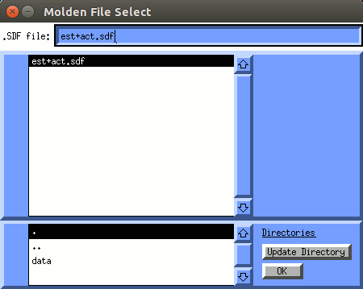 |
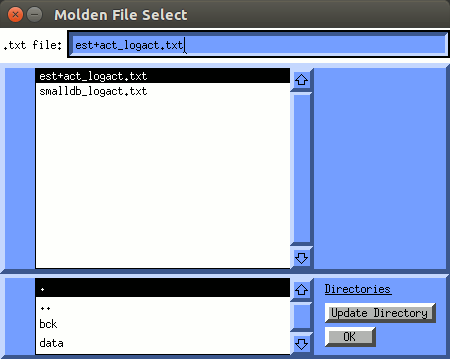 | 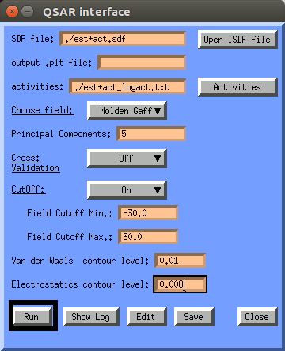 | 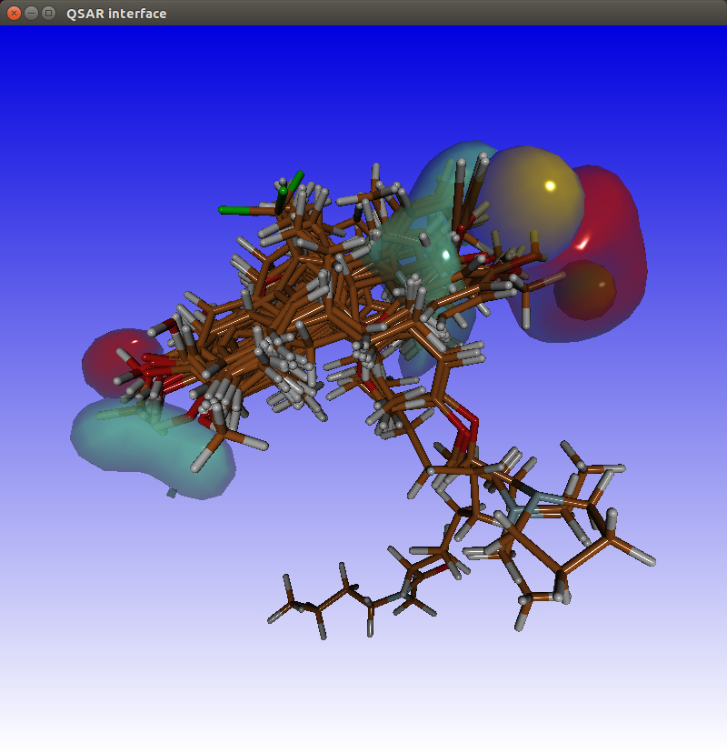 |
For clarity's sake make the surfaces transparent by typing a t character in the display screen.
You will have to adjust the default values for the van der Waals and
Electrostatics contour levels to 0.01 and 0.008 respectively.
The higher these values are the more compacted the surfaces become.
Higher contour values also mean greater correlation to the activity.
The light blue and red surfaces show the correlation of the electrostatics
part of the molecular field and the activity. These surfaces concentrate on
the two OH groups which are essential for activity.
Green contours indicate regions where a relatively bulkier substitution would
increase the activity, whereas the yellow contours indicate areas where a
bulkier substituent would decrease the activity.
The regions where increasing the positive charges would increase the activity
are in blue and regions where increasing the negative charges increases the activity are in red.
Hit the Show Log button to view the contents of the qsar.log file. This will open the qsar.log window. In this window select the PLS option to set the viewport to the PLS part of the file.
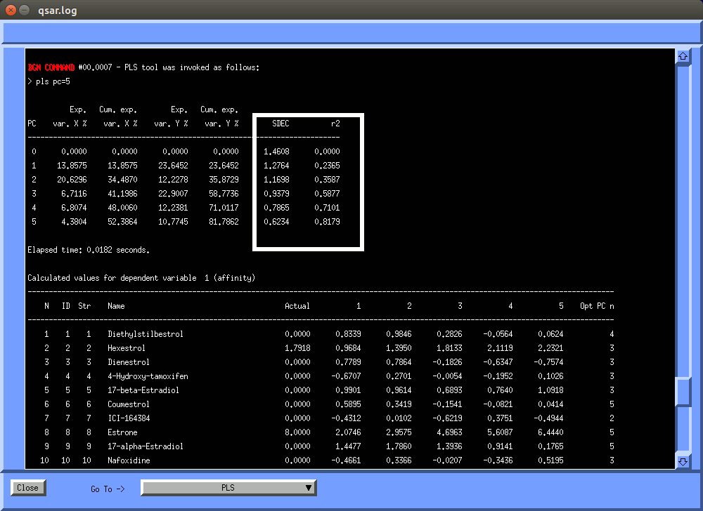
In the Open3DQSAR log file you will find SDEC (Standard Deviation of Error of Calculation) and r2
In a partial least-squares (PLS) analysis, two factors are important: the number of components used in the regression equation (which will be dealt with later) and the (usually squared) correlation coefficient. A non-cross-validated PLS analysis gives a squared correlation coefficient usually indicated by r2. This number, which is also used in (multiple) linear regression, is between zero and one and expresses the quality of the PLS analysis. It indicates the proportion of the variation in the dependent variable (here the activity) that is explained by the regression equation and its value should be as close to one as possible. However, r2 expresses the quality of the data fit rather than the quality of prediction (which is what we are actually interested in).
To express the predictive power of the analysis, the cross-validated r2, usually indicated by q2, is used. In cross-validation, one value is left out, a model is derived using the remaining data, and the model is used to predict the value originally left out. This procedure is repeated for all values, yielding q2. q2 is normally (much) lower than r2 and values greater than 0.5 already indicate significant predictive power.
After the cross-validated PLS analysis, you will determine the optimal number of components. Recall that the components are linear combinations of the variables (of which you have very many!), ordered in such a way that the first component will describe most of the variation in the activity, the second most of the remaining variation, etc. The cross-validated PLS analysis will be carried out for different numbers of components. As a rule of thumb, the number of components should not exceed one-third of the number of molecules. More components would lead to a model that is overtrained - it has a better fit to the training data but the predictive power is diminished.
To perform a cross-validated PLS, we switch the Cross Validation button to On.
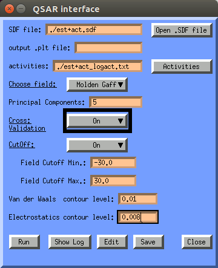
Hit the Show Log button to view the contents of the qsar.log file. This will open the qsar.log window. In this window select the CV option to set the viewport to the cross validation part of the file.
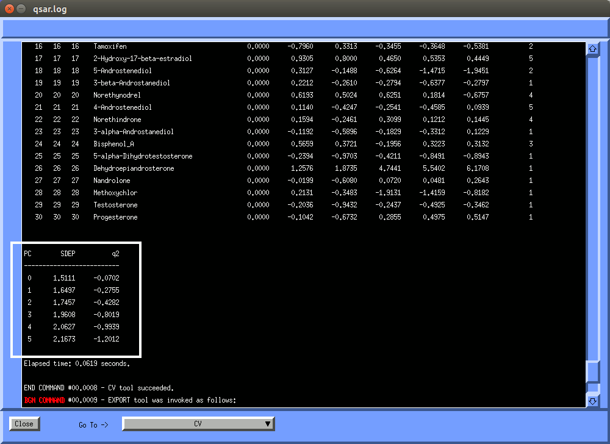
The two important factors here are the standard error of prediction (SEP) and the cross-validated r2 (usually called q2). SEP should be as low as possible and q2 should be larger than 0.5 (lower values indicate poor predictive power).
The resulting number of components will be used in the non-cross-validated analysis.
You will find that you can not get the q2 above 0.5 with
this combination of dataset and descriptors. In fact the q2's are negative !
We will try to get the q2 above 0.5 by switching to a more
focussed dataset: we will remove the non-steroidal compounds from the dataset.
Remember you wrote down the names of the non-steroidal compounds ?
Now remove all non-steroidal compounds from the dataset:
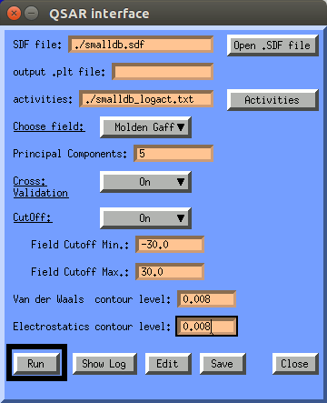 | 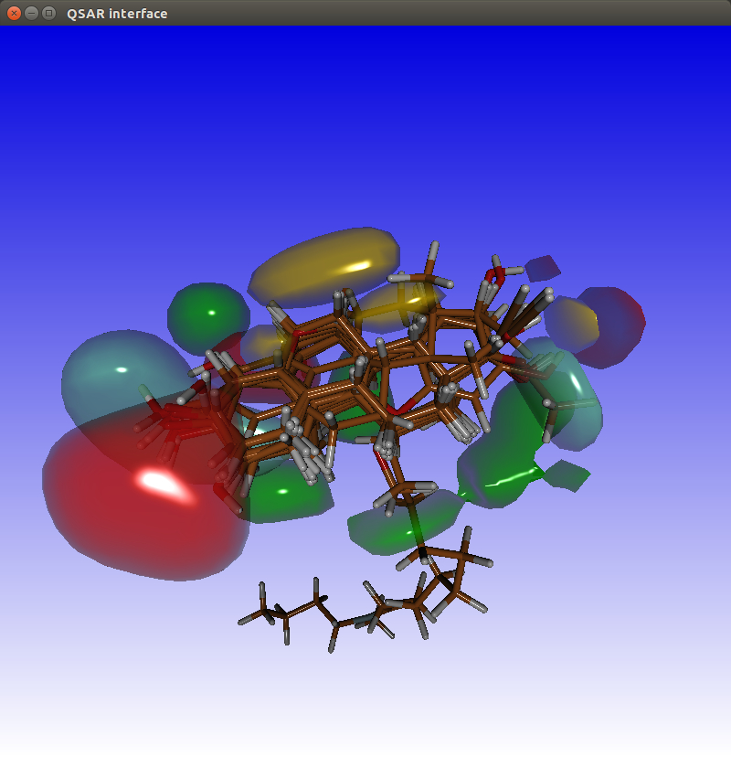 | 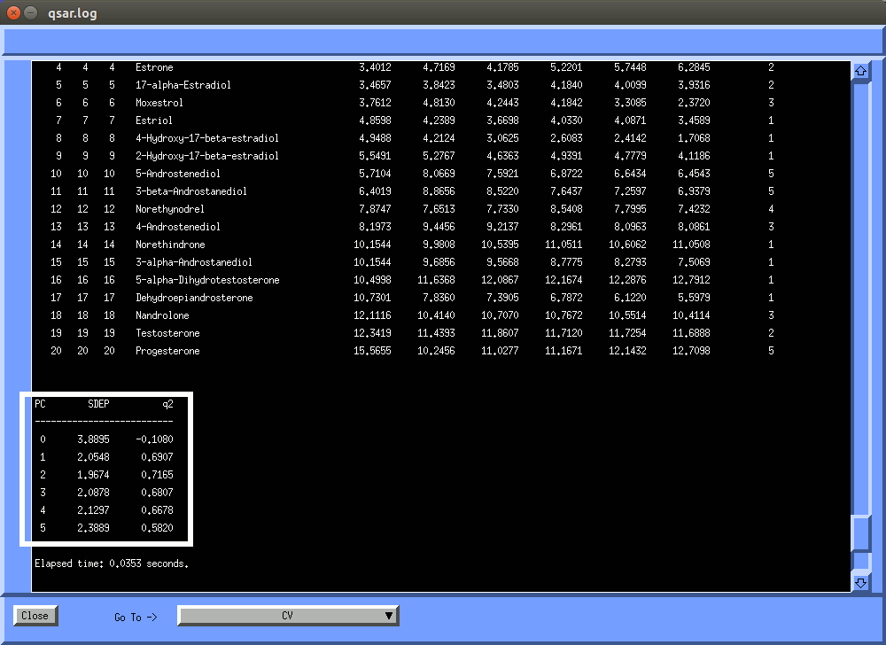 |
By varying the number of components it is possible
to get q2 as high as 0.717.